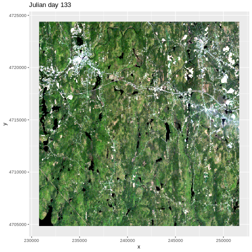

Raster Time Series Data
Last updated on 2023-11-21 | Edit this page
Overview
Questions
- How can I view and and plot data for different times of the year?
Objectives
- Understand the format of a time series raster dataset.
- Work with time series rasters.
- Import a set of rasters stored in a single directory.
- Create a multi-paneled plot.
- Convert character data to date format.
Things You’ll Need To Complete This Episode
See the lesson homepage for detailed information about the software, data, and other prerequisites you will need to work through the examples in this episode.
This episode covers how to work with and plot a raster time series, using an R raster object. It also covers practical assessment of data quality in remote sensing derived imagery.
About Raster Time Series Data
A raster data file can contain one single band or many bands. If the raster data contains imagery data, each band may represent reflectance for a different wavelength (color or type of light) or set of wavelengths - for example red, green and blue. A multi-band raster may two or more bands or layers of data collected at different times for the same extent (region) and of the same resolution. For this episode, we will work with a time series of normalized difference vegetation index (NDVI) and RGB data from the Harvard Forest site. We introduced the concepts of NDVI and RGB data in an earlier lesson and worked with an RGB RasterStack in the Work with Multi-band Rasters in R episode.
In this episode, we will:
- Import NDVI data in GeoTIFF format.
- Import, explore and plot NDVI data derived for several dates throughout the year.
- View the RGB imagery used to derived the NDVI time series to better understand unusual / outlier values.
RGB Data
While the NDVI data is a single band product, the RGB images that contain the red band used to derive NDVI, contain 3 (of the 7) 30m resolution bands available from Landsat data. The RGB directory contains RGB images for each time period that NDVI is available.
Getting Started
In this episode, we will use the terra,
scales, tidyr, and ggplot2
packages. Make sure you have them loaded.
R
library(terra)
library(scales)
library(tidyr)
library(ggplot2)
To begin, we will create a list of raster files using the
list.files() function. This list will be used to generate a
RasterStack. We will only add files that have a .tif
extension to our list. To do this, we will use the syntax
pattern=".tif$". If we specify
full.names = TRUE, the full path for each file will be
added to the list.
R
NDVI_HARV_path <- "data/NEON-DS-Landsat-NDVI/HARV/2011/NDVI"
all_NDVI_HARV <- list.files(NDVI_HARV_path,
full.names = TRUE,
pattern = ".tif$")
It’s a good idea to look at the file names that matched our search to make sure they meet our expectations.
R
all_NDVI_HARV
OUTPUT
[1] "data/NEON-DS-Landsat-NDVI/HARV/2011/NDVI/005_HARV_ndvi_crop.tif"
[2] "data/NEON-DS-Landsat-NDVI/HARV/2011/NDVI/037_HARV_ndvi_crop.tif"
[3] "data/NEON-DS-Landsat-NDVI/HARV/2011/NDVI/085_HARV_ndvi_crop.tif"
[4] "data/NEON-DS-Landsat-NDVI/HARV/2011/NDVI/133_HARV_ndvi_crop.tif"
[5] "data/NEON-DS-Landsat-NDVI/HARV/2011/NDVI/181_HARV_ndvi_crop.tif"
[6] "data/NEON-DS-Landsat-NDVI/HARV/2011/NDVI/197_HARV_ndvi_crop.tif"
[7] "data/NEON-DS-Landsat-NDVI/HARV/2011/NDVI/213_HARV_ndvi_crop.tif"
[8] "data/NEON-DS-Landsat-NDVI/HARV/2011/NDVI/229_HARV_ndvi_crop.tif"
[9] "data/NEON-DS-Landsat-NDVI/HARV/2011/NDVI/245_HARV_ndvi_crop.tif"
[10] "data/NEON-DS-Landsat-NDVI/HARV/2011/NDVI/261_HARV_ndvi_crop.tif"
[11] "data/NEON-DS-Landsat-NDVI/HARV/2011/NDVI/277_HARV_ndvi_crop.tif"
[12] "data/NEON-DS-Landsat-NDVI/HARV/2011/NDVI/293_HARV_ndvi_crop.tif"
[13] "data/NEON-DS-Landsat-NDVI/HARV/2011/NDVI/309_HARV_ndvi_crop.tif"Now we have a list of all GeoTIFF files in the NDVI directory for
Harvard Forest. Next, we will create a stack of rasters from this list
using the rast() function. We worked with the
rast() function in an
earlier episode.
R
NDVI_HARV_stack <- rast(all_NDVI_HARV)
We can explore the GeoTIFF tags (the embedded metadata) in a stack
using the same syntax that we used on single-band raster objects in R
including: crs() (coordinate reference system),
ext() and res() (resolution; specifically
yres() and xres()).
R
crs(NDVI_HARV_stack, proj = TRUE)
OUTPUT
[1] "+proj=utm +zone=19 +ellps=WGS84 +units=m +no_defs"The CRS for our stack is
+proj=utm +zone=19 +ellps=WGS84 +units=m +no_defs. The CRS
is in UTM Zone 19. If you have completed the previous episodes in this
workshop, you may have noticed that the UTM zone for the NEON collected
remote sensing data was in Zone 18 rather than Zone 19. Why are the
Landsat data in Zone 19?

A Landsat scene is extremely wide - spanning over 170km north to south and 180km east to west. This means that Landsat data often cover multiple UTM zones. When the data are processed, the zone in which the majority of the data cover is the zone which is used for the final CRS. Thus, our field site at Harvard Forest is located in UTM Zone 18, but the Landsat data is in a CRS of UTM Zone 19.
R
ext(NDVI_HARV_stack)
OUTPUT
SpatExtent : 239415, 239535, 4714215, 4714365 (xmin, xmax, ymin, ymax)R
yres(NDVI_HARV_stack)
OUTPUT
[1] 30R
xres(NDVI_HARV_stack)
OUTPUT
[1] 30Plotting Time Series Data
Once we have created our RasterStack, we can visualize our data. We
can use the ggplot() command to create a multi-panelled
plot showing each band in our RasterStack. First we need to create a
data frame object. Because there are multiple columns in our data that
are not variables, we will tidy (or “gather”) the data so that we have a
single column with the NDVI observations. We will use the function
gather() from the tidyr package to do
this:
R
NDVI_HARV_stack_df <- as.data.frame(NDVI_HARV_stack, xy = TRUE) %>%
gather(variable, value, -(x:y))
Now we can plot our data using ggplot(). We want to
create a separate panel for each time point in our time series, so we
will use the facet_wrap() function to create a
multi-paneled plot:
R
ggplot() +
geom_raster(data = NDVI_HARV_stack_df , aes(x = x, y = y, fill = value)) +
facet_wrap(~ variable)

Look at the range of NDVI values observed in the plot above. We know that the accepted values for NDVI range from 0-1. Why does our data range from 0 - 10,000?
Scale Factors
The metadata for this NDVI data specifies a scale factor: 10,000. A scale factor is sometimes used to maintain smaller file sizes by removing decimal places. Storing data in integer format keeps files sizes smaller.
Let’s apply the scale factor before we go any further. Conveniently, we can quickly apply this factor using raster math on the entire stack as follows:
R
NDVI_HARV_stack <- NDVI_HARV_stack/10000
After applying our scale factor, we can recreate our plot using the same code we used above.
R
NDVI_HARV_stack_df <- as.data.frame(NDVI_HARV_stack, xy = TRUE) %>%
gather(variable, value, -(x:y))
ggplot() +
geom_raster(data = NDVI_HARV_stack_df , aes(x = x, y = y, fill = value)) +
facet_wrap(~variable)
Take a Closer Look at Our Data
Let’s take a closer look at the plots of our data. Massachusetts, where the NEON Harvard Forest Field Site is located, has a fairly consistent fall, winter, spring, and summer season where vegetation turns green in the spring, continues to grow throughout the summer, and begins to change colors and senesce in the fall through winter. Do you notice anything that seems unusual about the patterns of greening and browning observed in the plots above?
Hint: the number after the “X” in each tile title is the Julian day which in this case represents the number of days into each year. If you are unfamiliar with Julian day, check out the NEON Data Skills Converting to Julian Day tutorial.
View Distribution of Raster Values
In the above exercise, we viewed plots of our NDVI time series and noticed a few images seem to be unusually light. However this was only a visual representation of potential issues in our data. What is another way we can look at these data that is quantitative?
Next we will use histograms to explore the distribution of NDVI values stored in each raster.
R
ggplot(NDVI_HARV_stack_df) +
geom_histogram(aes(value)) +
facet_wrap(~variable)
OUTPUT
`stat_bin()` using `bins = 30`. Pick better value with `binwidth`.
It seems like things get green in the spring and summer like we expect, but the data at Julian days 277 and 293 are unusual. It appears as if the vegetation got green in the spring, but then died back only to get green again towards the end of the year. Is this right?
Explore Unusual Data Patterns
The NDVI data that we are using comes from 2011, perhaps a strong freeze around Julian day 277 could cause a vegetation to senesce early, however in the eastern United States, it seems unusual that it would proceed to green up again shortly thereafter.
Let’s next view some temperature data for our field site to see whether there were some unusual fluctuations that may explain this pattern of greening and browning seen in the NDVI data. First we will read in the temperature data and preview the structure of that dataframe:
R
har_met_daily <-
read.csv("data/NEON-DS-Met-Time-Series/HARV/FisherTower-Met/hf001-06-daily-m.csv")
str(har_met_daily)
OUTPUT
'data.frame': 5345 obs. of 46 variables:
$ date : chr "2001-02-11" "2001-02-12" "2001-02-13" "2001-02-14" ...
$ jd : int 42 43 44 45 46 47 48 49 50 51 ...
$ airt : num -10.7 -9.8 -2 -0.5 -0.4 -3 -4.5 -9.9 -4.5 3.2 ...
$ f.airt : chr "" "" "" "" ...
$ airtmax : num -6.9 -2.4 5.7 1.9 2.4 1.3 -0.7 -3.3 0.7 8.9 ...
$ f.airtmax: chr "" "" "" "" ...
$ airtmin : num -15.1 -17.4 -7.3 -5.7 -5.7 -9 -12.7 -17.1 -11.7 -1.3 ...
$ f.airtmin: chr "" "" "" "" ...
$ rh : int 40 45 70 78 69 82 66 51 57 62 ...
$ f.rh : chr "" "" "" "" ...
$ rhmax : int 58 85 100 100 100 100 100 71 81 78 ...
$ f.rhmax : chr "" "" "" "" ...
$ rhmin : int 22 14 34 59 37 46 30 34 37 42 ...
$ f.rhmin : chr "" "" "" "" ...
$ dewp : num -22.2 -20.7 -7.6 -4.1 -6 -5.9 -10.8 -18.5 -12 -3.5 ...
$ f.dewp : chr "" "" "" "" ...
$ dewpmax : num -16.8 -9.2 -4.6 1.9 2 -0.4 -0.7 -14.4 -4 0.6 ...
$ f.dewpmax: chr "" "" "" "" ...
$ dewpmin : num -25.7 -27.9 -10.2 -10.2 -12.1 -10.6 -25.4 -25 -16.5 -5.7 ...
$ f.dewpmin: chr "" "" "" "" ...
$ prec : num 0 0 0 6.9 0 2.3 0 0 0 0 ...
$ f.prec : chr "" "" "" "" ...
$ slrt : num 14.9 14.8 14.8 2.6 10.5 6.4 10.3 15.5 15 7.7 ...
$ f.slrt : chr "" "" "" "" ...
$ part : num NA NA NA NA NA NA NA NA NA NA ...
$ f.part : chr "M" "M" "M" "M" ...
$ netr : num NA NA NA NA NA NA NA NA NA NA ...
$ f.netr : chr "M" "M" "M" "M" ...
$ bar : int 1025 1033 1024 1016 1010 1016 1008 1022 1022 1017 ...
$ f.bar : chr "" "" "" "" ...
$ wspd : num 3.3 1.7 1.7 2.5 1.6 1.1 3.3 2 2.5 2 ...
$ f.wspd : chr "" "" "" "" ...
$ wres : num 2.9 0.9 0.9 1.9 1.2 0.5 3 1.9 2.1 1.8 ...
$ f.wres : chr "" "" "" "" ...
$ wdir : int 287 245 278 197 300 182 281 272 217 218 ...
$ f.wdir : chr "" "" "" "" ...
$ wdev : int 27 55 53 38 40 56 24 24 31 27 ...
$ f.wdev : chr "" "" "" "" ...
$ gspd : num 15.4 7.2 9.6 11.2 12.7 5.8 16.9 10.3 11.1 10.9 ...
$ f.gspd : chr "" "" "" "" ...
$ s10t : num NA NA NA NA NA NA NA NA NA NA ...
$ f.s10t : chr "M" "M" "M" "M" ...
$ s10tmax : num NA NA NA NA NA NA NA NA NA NA ...
$ f.s10tmax: chr "M" "M" "M" "M" ...
$ s10tmin : num NA NA NA NA NA NA NA NA NA NA ...
$ f.s10tmin: chr "M" "M" "M" "M" ...The date column is currently coded as a character. We
want to be able to treat it as a date, so we will use the
as.Date() function to convert it. We need to tell R what
format the data is in. Our dates are YYY-MM-DD, which is represented by
R as %Y-%m-%d.
R
har_met_daily$date <- as.Date(har_met_daily$date, format = "%Y-%m-%d")
We only want to look at the data from 2011:
R
yr_11_daily_avg <- har_met_daily %>%
filter(between(date, as.Date('2011-01-01'), as.Date('2011-12-31')))
Now we can plot the air temperature (the airt column) by
Julian day (the jd column):
R
ggplot() +
geom_point(data = yr_11_daily_avg, aes(jd, airt)) +
ggtitle("Daily Mean Air Temperature",
subtitle = "NEON Harvard Forest Field Site") +
xlab("Julian Day 2011") +
ylab("Mean Air Temperature (C)")

There are no significant peaks or dips in the temperature during the late summer or early fall time period that might account for patterns seen in the NDVI data. Let’s have a look at the source Landsat imagery that was partially used used to derive our NDVI rasters to try to understand what appear to be outlier NDVI values.

First we need to load in the RGB data for Julian day 277 and look at its metadata.
R
RGB_277 <- rast("data/NEON-DS-Landsat-NDVI/HARV/2011/RGB/277_HARV_landRGB.tif")
# NOTE: Fix the bands' names so they don't start with a number!
names(RGB_277) <- paste0("X", names(RGB_277))
RGB_277
OUTPUT
class : SpatRaster
dimensions : 652, 696, 3 (nrow, ncol, nlyr)
resolution : 30, 30 (x, y)
extent : 230775, 251655, 4704825, 4724385 (xmin, xmax, ymin, ymax)
coord. ref. : WGS 84 / UTM zone 19N (EPSG:32619)
source : 277_HARV_landRGB.tif
names : X277_HARV_landRGB_1, X277_HARV_landRGB_2, X277_HARV_landRGB_3
min values : 26, 29, 79
max values : 255, 255, 255 The RGB data has a max value of 255, but we need our color intensity to be between 0 and 1, so we will divide our RasterStack object by 255.
R
RGB_277 <- RGB_277/255
Next we convert it to a dataframe.
R
RGB_277_df <- as.data.frame(RGB_277, xy = TRUE)
We create RGB colors from the three channels:
R
RGB_277_df$rgb <-
with(RGB_277_df, rgb(X277_HARV_landRGB_1, X277_HARV_landRGB_2,
X277_HARV_landRGB_3, 1))
Finally, we can plot the RGB data for Julian day 277.
R
ggplot() +
geom_raster(data=RGB_277_df, aes(x, y), fill=RGB_277_df$rgb) +
ggtitle("Julian day 277")

We then do the same steps for Julian day 293
R
# Julian day 293
RGB_293 <- rast("data/NEON-DS-Landsat-NDVI/HARV/2011/RGB/293_HARV_landRGB.tif")
names(RGB_293) <- paste0("X", names(RGB_293))
RGB_293 <- RGB_293/255
RGB_293_df <- as.data.frame(RGB_293, xy = TRUE)
RGB_293_df$rgb <-
with(RGB_293_df, rgb(X293_HARV_landRGB_1, X293_HARV_landRGB_2,
X293_HARV_landRGB_3,1))
ggplot() +
geom_raster(data = RGB_293_df, aes(x, y), fill = RGB_293_df$rgb) +
ggtitle("Julian day 293")
This example highlights the importance of exploring the source of a derived data product. In this case, the NDVI data product was created using Landsat imagery - specifically the red and near-infrared bands. When we look at the RGB collected at Julian days 277 and 293 we see that most of the image is filled with clouds. The very low NDVI values resulted from cloud cover — a common challenge that we encounter when working with satellite remote sensing imagery.